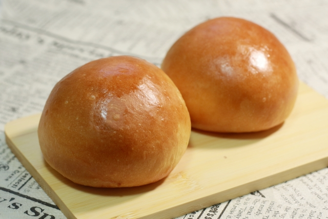

ブリオッシュ（Brioche）

「ブリオッシュ」とは、バターと卵をたっぷりと配合したフランス発祥のリッチな菓子パンの1種。
名前の由来としては、「bris（ブリ）＝砕く」「hocher（オシェ）＝ゆさぶる」のふたつの言葉を組み合わせたという説と、ブリ―地方（チーズで有名です）の名前からという説があるようです。
引用：ブリオッシュとは？｜基礎知識や特徴、人気レシピ＆作り方を総まとめ | 富澤商店
クロワッサンとの関係（Relation with Croissant）
ブリオッシュは「viennoiserie（ヴィエノワズリー）」と呼ばれるパン菓子の代表的なもののひとつで、その仲間にはほかにクロワッサン、パン・オ・ショコラ、パン・オ・レザンといった発酵生地や折込の発酵生地で作られる朝食やおやつ用の製品があります。
引用：ブリオッシュとは？｜基礎知識や特徴、人気レシピ＆作り方を総まとめ | 富澤商店